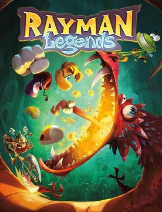
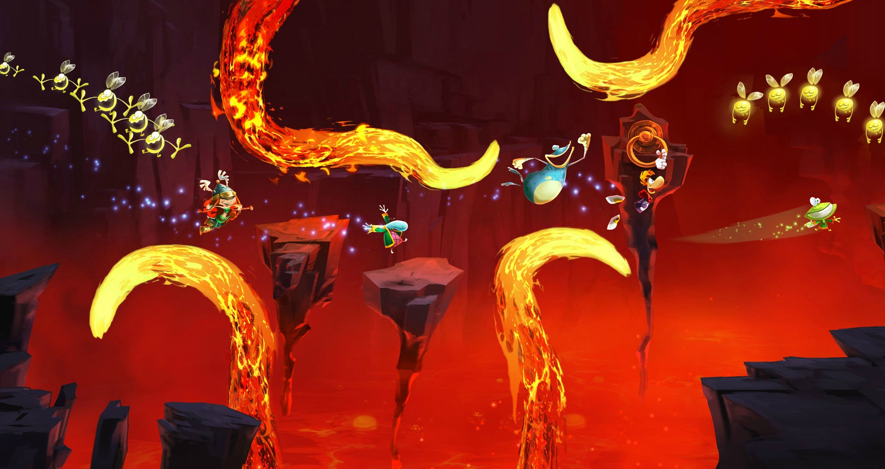

Rayman Legends is a platform video game developed by Ubisoft Montpellier and published by Ubisoft.
What the game is about
The game carries on the style of gameplay from Rayman Origins in which up to four players (depending on the format) simultaneously make their way through various levels. Lums can be collected by touching them, defeating enemies, or freeing captured Teensies. Collecting Teensies unlocks new worlds, which can be played in any order once they are available. Along with Rayman, Globox, and the Teensies returning as playable characters, players can now control the new female character Barbara the Barbarian Princess, her sister and their cousins, once they are rescued from certain stages.
 Click here to find out more.